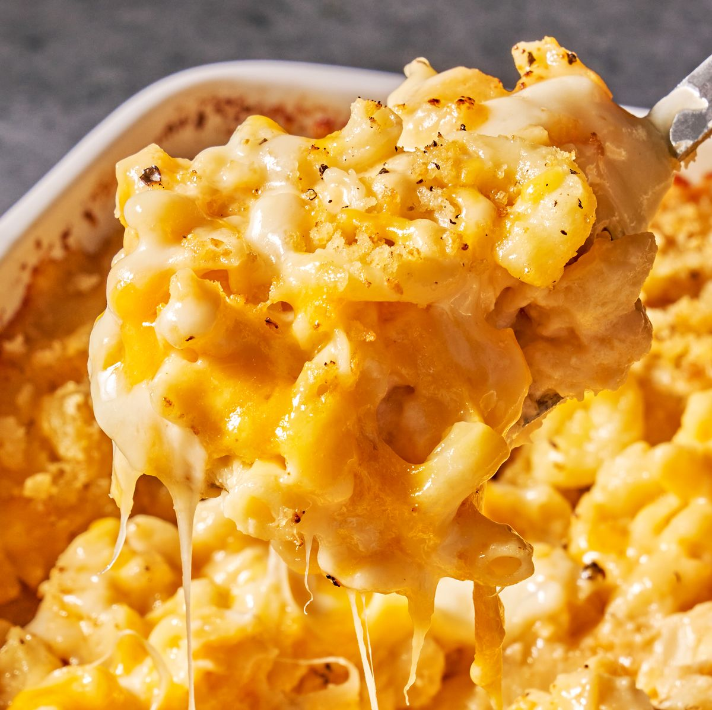

Homemade Mac and Cheese

Description:
Dive into the epitome of comfort: Homemade Macaroni and Cheese. This dish boasts a creamy blend of sharp Cheddar and Parmesan, enveloping every bite of tender macaroni. Prepared from scratch, a buttery roux gives rise to a velvety cheese sauce, complemented by a golden breadcrumb topping. Whether a main or side, this recipe promises both ease and indulgence, destined to be a family favorite.
Ingredients:
- 8 ounces uncooked elbow macaroni
- ¼ cup salted butter
- 3 tablespoons all-purpose flour
- 2 ½ cups milk, or more as needed
- 2 cups shredded sharp Cheddar cheese
- ½ cup finely grated Parmesan cheese
- salt and ground black pepper to taste (Optional)
Steps:
- Preheat the oven to 350°F (175°C) and grease an 8-inch square baking dish.
- Boil macaroni in salted water until slightly tender, about 8 minutes. Drain and place in the baking dish.
- In a skillet, melt 1/4 cup butter. Whisk in flour until golden brown.
- Gradually add 2 1/2 cups milk, bringing the mixture to a simmer.
- Stir in shredded Cheddar, Parmesan, salt, and pepper until a thick sauce forms.
- Pour the cheese sauce over the macaroni, mixing well.
- In another skillet, melt 2 tablespoons butter. Cook and stir breadcrumbs until browned.
- Sprinkle breadcrumbs and paprika over the macaroni.
- Bake for 30 minutes or until golden and bubbly.
Back